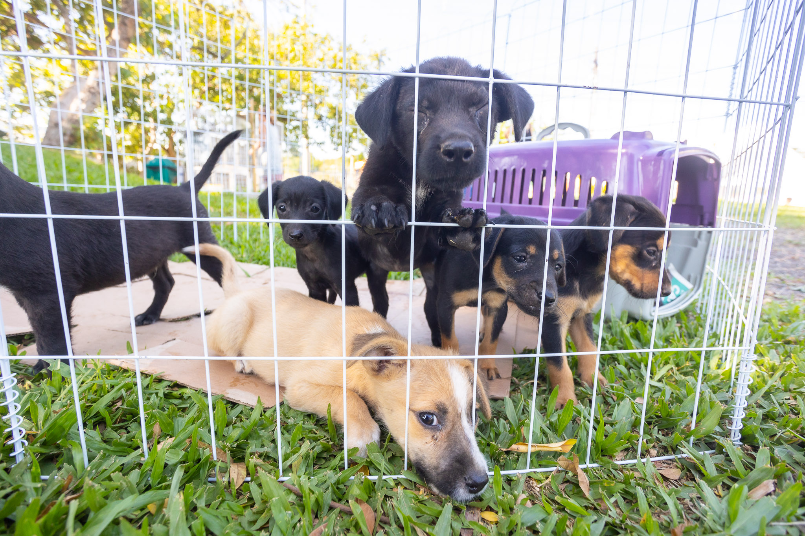

Projeto Esperança Animal
O Projeto Esperança Animal é uma iniciativa dedicada à proteção e adoção de animais abandonados. Ele promove campanhas de vacinação, feiras de adoção e conscientização sobre o cuidado responsável com os pets.
Além disso, o projeto atua em parceria com clínicas veterinárias e voluntários para garantir o bem-estar dos animais resgatados.
Voltar